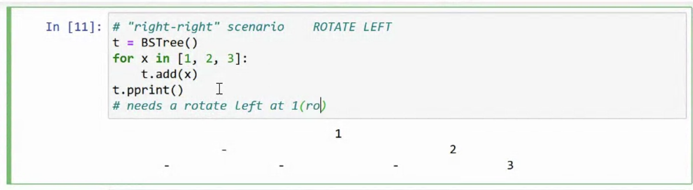
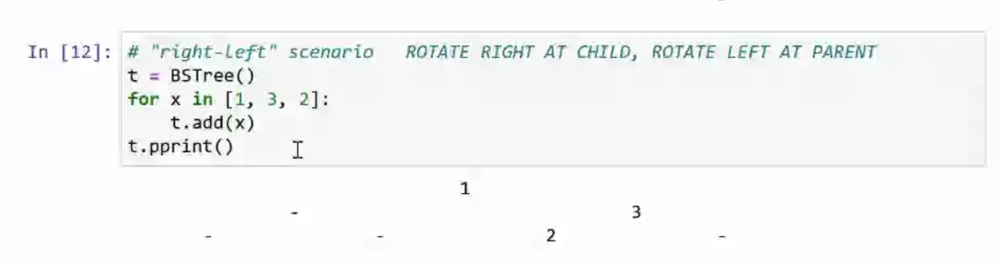
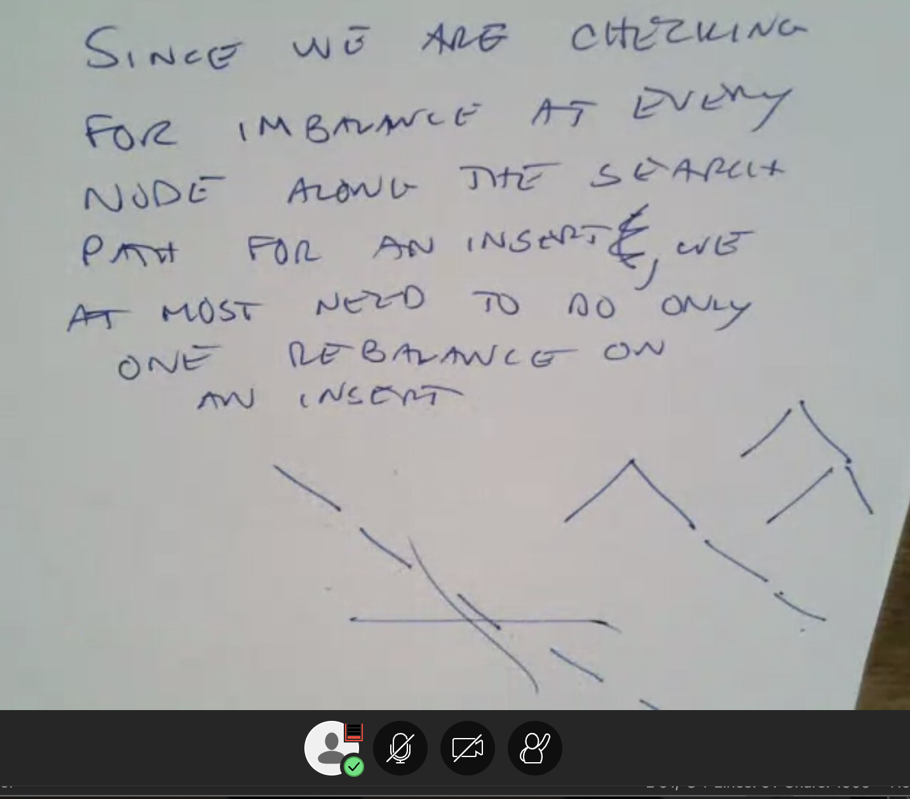
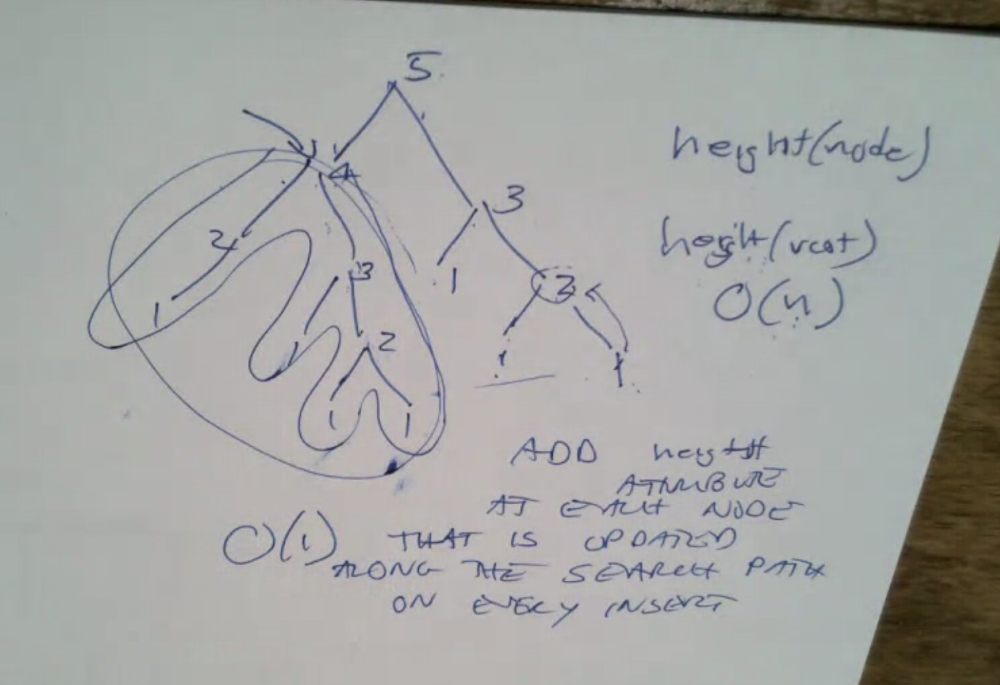
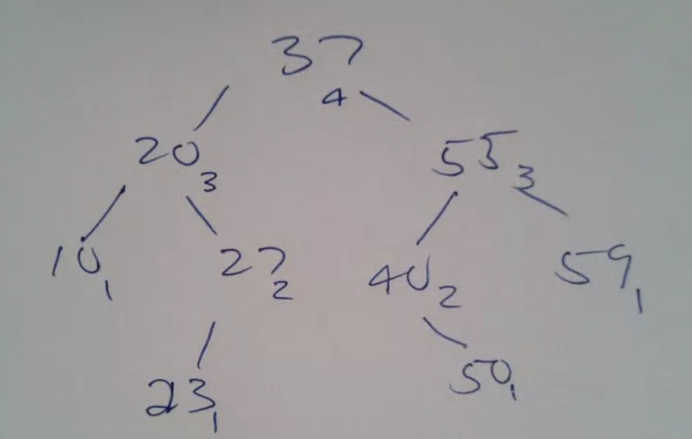
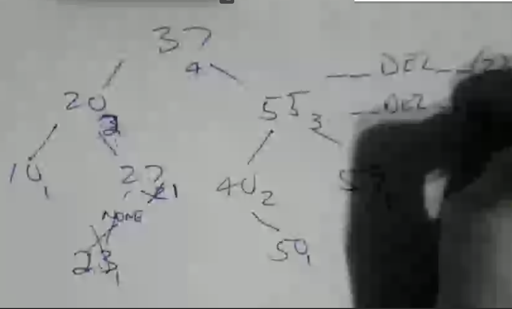

BST
binary tree
- every one has 0, 1 or 2 chils
- labeled as l, r child
- childs are bsts
search
- values smaller than the value is at left subtree
- ... larger ... right ...
- no duplicates
main functions
add
- pointer where to add, if
define height = length to reach leaf
delete
- 1 child ==> direct direct
- 2 children ==> swap and delete the successor node

search traverse
AVL balanced tree
Assume we have
If a is inbalanced, and it's longer than subtree b, we can rotate like:

let a closer to the top and let b get lower -- preserve length
this is called a right rotate
Problem

Machanic: Rotation
- balanced ≠ every level full
- AVL trees denote balanced and the height difference for each left and right child subtree is at most 1. (at every node)
- height = dis to furthest node

Example: add (22)

- rotation


- Right rotate fixed the unbalances caused by a left left problem
- left rotate fixes the unbalances caused by a right right prob
Procedure

then we get


Multiple rotations

left left

lefr right imbalance 


Deleting

Delete 23:

Delete 55: